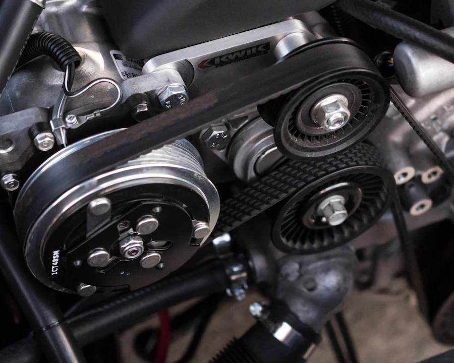

Pièces d'occasion vérifiées
Le cœur du métier : des pièces démontées sur des véhicules récents, contrôlées une par une, vendues à une fraction du prix du neuf. La solution la plus économique et la plus écologique pour remettre votre voiture sur la route.
- Moteurs, boîtes de vitesses, turbos, injection
- Optiques, carrosserie, portières, rétroviseurs
- Jantes, sellerie, électronique embarquée